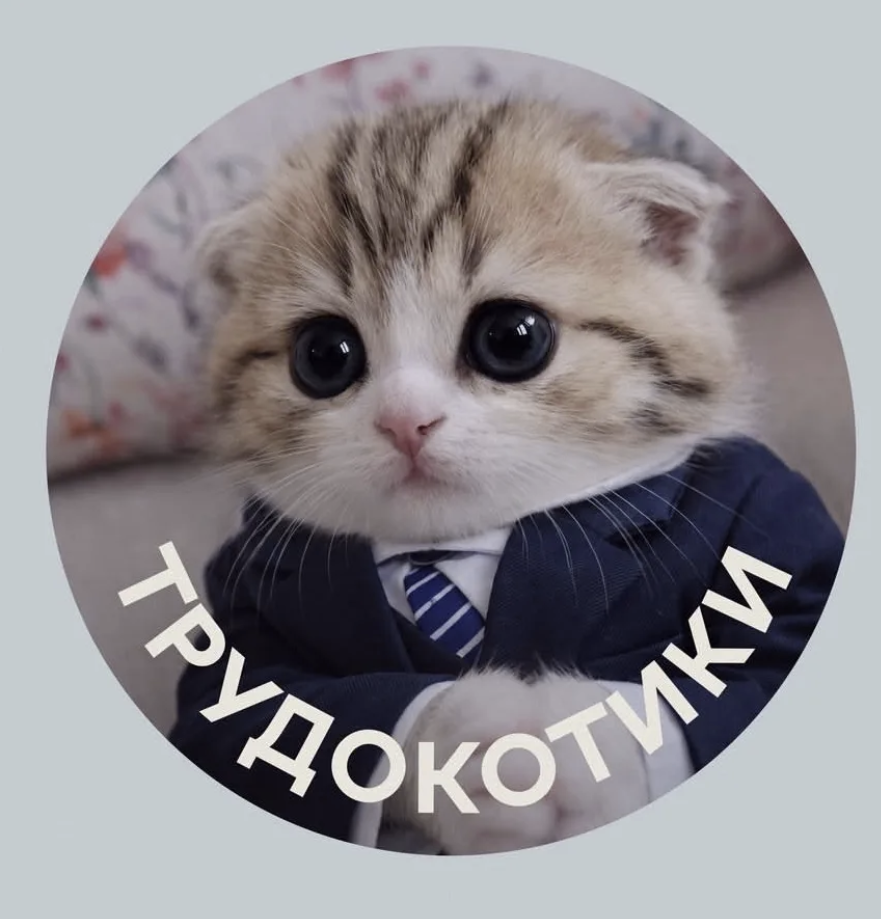

Новостей: 16 · период: 9 дней
Проект Минпромторга о порядке блокировки продаж через систему маркировки. Нужно учитывать при работе с остатками и выводом товара из оборота.
Изменения в Единые санитарно-эпидемиологические требования. Проверить по ввозимым товарным группам.
Охрана прекращена из-за неиспользования знаков. Иллюстрирует риск досрочного прекращения охраны неиспользуемых обозначений.
Готовятся новые правила экомаркировки. Касается обозначений с экологическими элементами.
Предлагается учитывать поданную заявку при выдаче эко-сертификата.
Введён запрет на ввоз отдельных категорий товаров. Требуется сверить перечень с номенклатурой текущих и планируемых поставок.
Введён временный запрет на вывоз отдельных товаров.
Покупателю не удалось освободиться от ответственности ссылкой на санкции. Ориентир по оценке санкционных ограничений как основания освобождения от ответственности.
Разъяснение об обеспечительном платеже при ввозе из Беларуси.
Договор продолжает действовать, ответственность приостанавливается на период обстоятельств.
Какие возражения принимает российский суд при оспаривании иностранных решений. Касается споров с иностранными контрагентами.
Обзор практики ФАС за октябрь, включая лишение допуска за недостоверные сведения в заявке.
Стоимость доли определяется исходя из рыночной стоимости всех активов общества.
Сводка позиций Верховного суда по банкротству за квартал.
Поправки приняты в первом чтении. Планировать с учётом изменений ставок и ответственности.
Минэкономразвития установило значения коэффициентов на 2027 год.